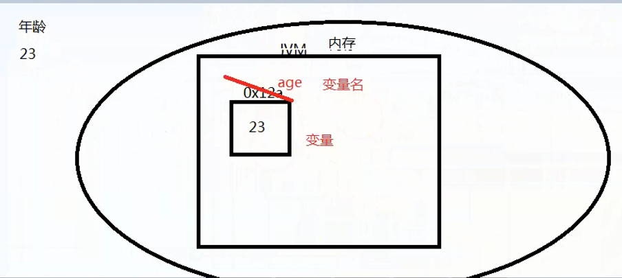
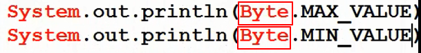

变量：
存储空间，空间中的数据可以改变。
变量在内存中的储存:

标识符命名规则：
1.由字母、数字、下划线_ 、$ 组成；
2.不能以数字开头；
3.不能是java的关键字；
4.不能是字面值。如: 13(这种数字是不行的,而且也以数字开头了)、25、true、false、null.
标识符命名规范：
骆驼(驼峰)命名法：
1.见名知意即可 不要过长
2.camel 驼峰原则
3.包的命名:全部小写 多级包用 . 隔开 例如:com.ghgj.exercise
4.类||接口: 每个单词的首字母大写 例如:class JingDong{}
5.方法||变量: 第一个单词全部小写,第二个单词开始,每个单词首字母大写 例如: int taoBao; 又如: public static void main(String[] args){ }
6.常量:所有字母全部大写 每个单词之间使用下划线“_”进行分割 例如: GUO_WU_YUAN
作为程序员,编程时,既要符合命名规则,也要符合命名规范,方便别人阅读你的代码。
保留字：const、goto
注意：
1.同一个作用域内 ，不能声明同名的变量；
2.局部变量必须初始化后才能使用。
局部变量：
在方法中定义的变量。
------------------------------------------------------------------------------------------------------------------------------------------------------------------------
数据类型：
1.基本数据类型；存的都是值。
整数类型：11 22 33 (整数类型一般没有特殊情况就用int)
字节类型 byte 1 -128 到 127
短整数类型 short 2
整数类型 int 4
长整数类型 long 8
浮点类型：11.1 22.2 (浮点类型一般没有特殊情况就用double)
单精度 float 4
双精度 double 8
字符类型： char 2 如：'a' 'a' '2' '中'
布尔类型： boolean true false
用代码获得基本数据类型取值范围的方式:(基本数据类型需要用他们的包装类,如 Integer 、Double)

2.引用数据类型：存的都是地址。
字符串 String
数组 []
类类型 class
接口 interface
3.bit和byte的关系:
bit 位 0 ，1
byte 字节
1B = 8bit
1KB = 1024B
1MB = 1024KB
1GB = 1024MB
1TB = 1024GB
------------------------------------------------------------------------------------------------------------------------------------------------------------------------
类型转换：
1.自动类型转换 (可以把低类型的变量值直接赋值给高类型的变量。如 byte a = 1; int b = a;)
类型必须兼容
低类型 赋值给 高类型 (不会有损失、精度丢失) (这样的低类型直接将其值赋给高类型编译是不会报错和警告的)
byte -> short -> int -> long -> float -> double
char -> int -> long -> float -> double
自动类型转换的要求是: 低类型是高类型的子集,高类型完全包括低类型的取值范围。(并不是看高类型的字节数是否比低类型的字节数多,比如long是占8字节而float是占4字节),所以只看具体数的取值范围,不看字节数。

举例: byte类型的数字5转换为int类型的5的过程:
因为byte类型只有一个字节,int有四个字节。所以只需要把byte那个字节的值直接变成int类型的最后一个字节的值即可,且不会有任何的损失 或精度丢失(这里用的是原码表示,实际上转换时应该是补码，当然正数的补码和原码一致)

2.强制类型转换(可能会有损失、精度丢失)
高类型 赋值 给低类型 int a = (int)5.0;
如果一个其他类型的数本来就在将要转换成的类型的范围内, 那么不会有损失或精度丢失,如int型的5转换为byte类型, 5在byte类型的取值范围内，所以不会精度丢失，那么结果还是5
精度丢失举例: int 类型的数字263转换为byte类型结果为7的过程: (这里用的是原码表示,实际上转换时应该是补码，当然正数的补码和原码一样)
因为byte类型只有一个字节,int有四个字节。所以int类型转换时会舍弃int类型的前三个字节,只将最后一个字节的值转给byte类型,所以263转换完之后变成了7

3.自动类型提升：
前提：算术运算
原则: 低类型的提升为高类型进行运算，运算的结果采取整个表达式中，级别最高的类型为结果类型。
如: int a = 4; int b = (int)(a*5 + 5.85)
(a*5 + 5.85) 就因为是 int +double 型,自动提升为double型了 ,所以想要将结果改为int型,就需要强制类型转换
------------------------------------------------------------------------------------------------------------------------------------------------------------------------
运算符：
根据操作数的个数划分为：
一元运算符，二元运算符，三元运算符
算术运算符：
+ - * / % （求余数、取模）
除法中,被除数和除数都是整数时结果会取整


自增，自减（一元运算符）
后缀 前缀
++ a++ ++a -> a = a + 1;
-- a-- --a -> a = a - 1;
只有当自增或自减某个变量单独成句(单独作为一条语句,而不是一条语句的部分)时,才没有前缀后缀之分, 都是一样的。
如 a ++; 或者 ++a; 都仅仅表示a = a +1运算。
但是当自增或自减只作为一条语句的一部分时,就有了前缀和后缀之分。
区别:
后缀：
赋值运算，输出语句中，先赋值运算或输出，然后再自增或自减；
前缀：
赋值运算，输出语句中，先自增或自减，然后再赋值运算或输出。
如: int n3 = 5;int n4 = ++n3;
和 int n3 = 5;int n4 = n3++;
就有了明显区别,虽然n3的结果是一样的,但是n4的结果就不同了,前一个为 6, 后面那个为5
又如: int m1 = 5;
System.out.println(++m1);//结果为6
System.out.println(m1++);//结果为5

------------------------------------------------------------------------------------------------------------------------------------------------------------------------
关系运算符
> >= < <= == !=
逻辑运算：
&& 与
一假 false，为假 false
|| 或
一真 true，为真 true
！ 非
取反
------------------------------------------------------------------------------------------------------------------------------------------------------------------------
位运算符

位运算符：
& 位与
一个为 0 ，结果就是 0
| 位或
一个为 1 ，结果就是 1
^ 异或
相同为 0 ，不同为 1
任何数与其本身异或 结果为0
任何数异或0 结果为其本身

~ 位非，取反
二进制位取反
0 -> 1
1 -> 0
<< 左移
向左移动n位，右边低位用0补位。
相当于 数字乘以2的n次方。
>> 右移
向右移动n位，左边高位是什么就用什么补位。
相当于 数字乘以2的负n次方。
(或数字除以2的n次方)
>>> 无符号右移
向右移动n位，左边高位用0补位。
详情见网页:(图文结合,比较好理解)
或者(介绍了各个运算符的用途、性质,很全)
可用异或"^"来做数字的位置交换,效率更高


结果为a ==2 且b == 5。
------------------------------------------------------------------------------------------------------------------------------------------------------------------------
运算符的优先级

------------------------------------------------------------------------------------------------------------------------------------------------------------------------
"＋" 号使用时要注意的事项:
下图是一个运算顺序的问题

------------------------------------------------------------------------------------------------------------------------------------------------------------------------
控制台输入：Scanner类的使用
(1)Scanner类的方法中(以下的方法都是在调用该方法时先触发控制台(从键盘输入一些东西),再进行相应的判断或操作)
一般带"has"的方法是用来做判断的(这些方法首先触发控制台输入,然后再对输入的东西做判断)

带"next"的方法是用来做类型转换的(这些方法首先触发控制台输入,并且将输入的东西转换为对应的类型)
(特别注意转换为String类型就是next(),因为从控制台输入的符号或者数字,默认情况下都是String类型的,所以不用进行类型转换)


(还要特别注意输入一个字符的情况,如果只需要输入一个字符时(即char类型时),要用 next().charAt(0))来实现。
比如输入一个字符后,用于单个字符的比较

(2)导包时的注意事项以及Scanner类的初步使用(实现从键盘输入)
a.输入一个整数原样输出

b.输入两个数


-------------------------------------------------------------------------------------------------------------------------------------------------------------------------
判断字符串、字符序列是否相等（字符串内容是否相等）。
equals()
字符串1.equals(字符串2);
s1.equals(s2);
s1.equals("hello");
"hello".equals(s2);
"hello".equals("hello");
注意,String类型是引用数据类型,注意和int、char、double等基本类型区分(String类型的变量里存的就是地址)
而引用数据类型是不能用"=="来直接判断里面的值的(同理"!="也不可以),对于引用数据类型来说,"=="判断的是双等号两边的地址是否相等,而不是值是否相等。见下例

而应该用".equal()"来代替"==" ,见如下

———————————————————————手写与上传资料分割线——————————————————————